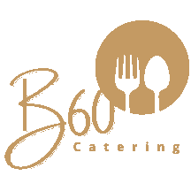
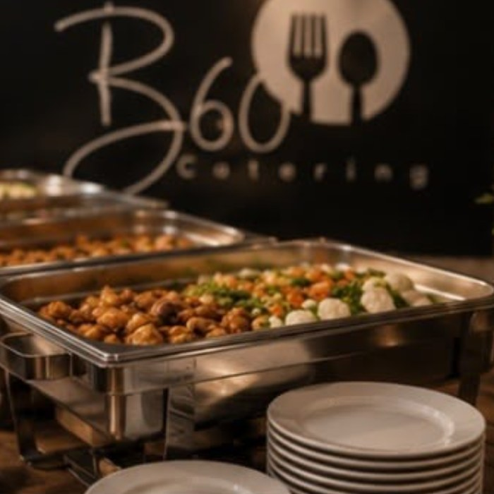
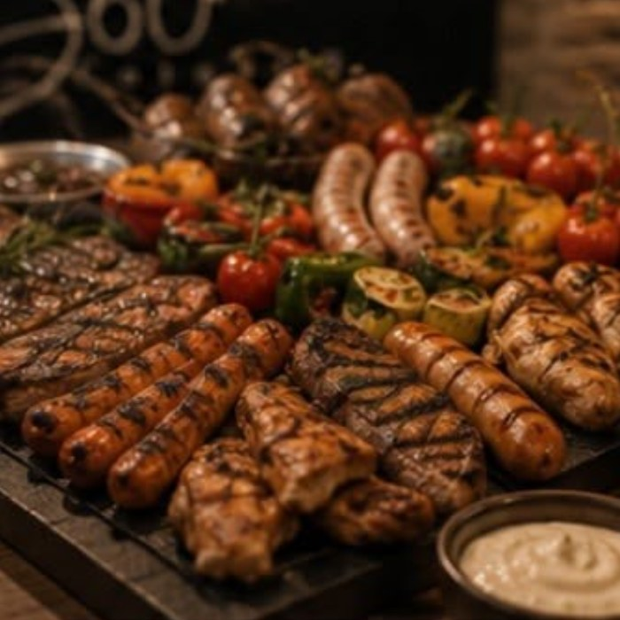
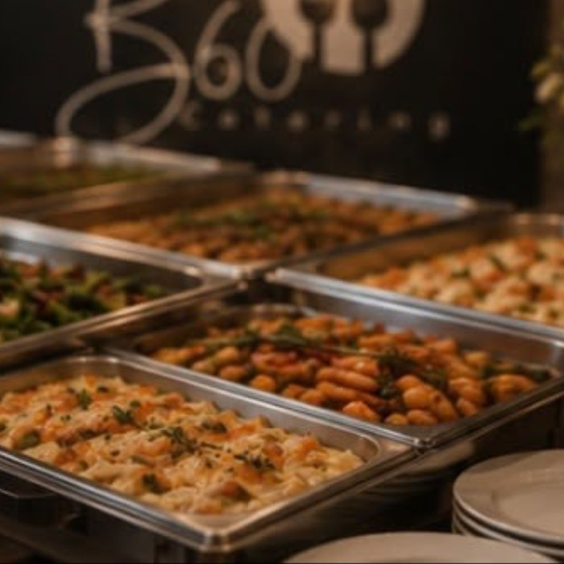

Unser Beispielmenü
Ein Auszug aus unserem Repertoire – von Flying Fingerfood über herzhafte Buffets bis zum Live Cooking direkt vor euren Gästen. Alle Gerichte sind saisonal und nach euren Wünschen anpassbar.
← Zurück zur StartseiteAlle Fingerfood-Variationen auch als vegetarische / vegane Version erhältlich.
Buffet ab 20 Personen · Aufbau, Service & Abbau inklusive.
Foodtruck-Einsatz auf Anfrage · Stromversorgung erforderlich.
Alle Menüs nach euren Wünschen anpassbar – sprecht uns an!

Wir freuen uns auf eure Anfrage! Schreibt uns oder folgt uns auf Instagram – gemeinsam stellen wir euer perfektes Menü zusammen.


